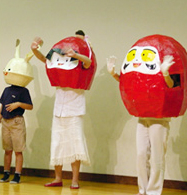

※誠に申し訳ございませんが、現在多忙により一時的に無料出張上映はお休みさせていただいております。(2016/11/19)

エクラアニマルは、自主制作アニメ「だるまちゃんシリーズ」や、アニメ「フイチンさん」「キャラ丸くんとドク丸くん」を
たくさんの方に知っていただきたいと、日々いろいろな活動をしています。またアニメはもちろんの事、絵本やおはなしなど子どもたちを取り巻くいろいろなメディアに携わっている方たちとの交流も大切にしたいと思っています。
わたしたちが自主制作した子どものためのアニメを無料で出張上映します。
また催される会に応じて着ぐるみなども出張できます。
上映作品、イベントの進行など、詳しくはメール、 またはお電話でご相談ください。
なお、プロジェクター・映写機・スクリーンなど、 上映に必要なものは当方でご用意できます。

※誠に申し訳ございませんが、現在多忙により一時的に無料出張上映はお休みさせていただいております。(2016/11/19)